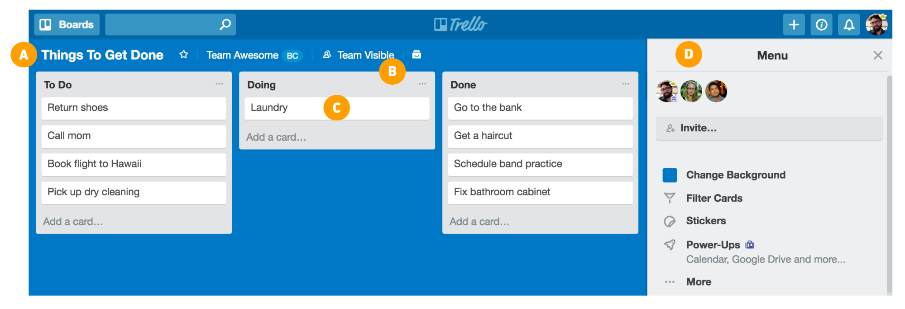
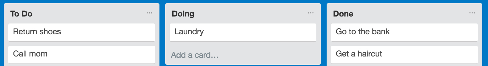
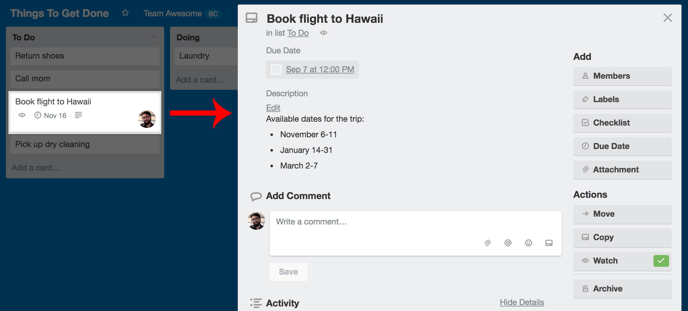
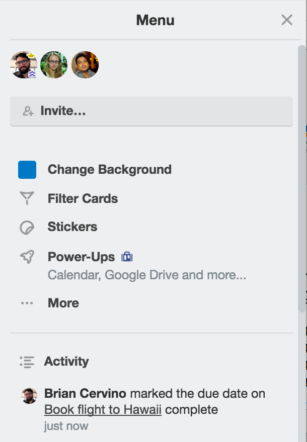

Trello 101
Breeze through the basics with this quick and handy guide.
Welcome to Trello!
Whether you’re at work, at home, or anywhere in between, Trello’s simple and flexible design lets your team collaborate and organize everything (literally, everything—from the day-to-day operations of your business to your next family vacation).
Getting Started With Trello
Getting set up and running with a new app is no small task, so we’ll guide you through Trello onboarding with speed and simplicity in mind. You’ll have your team collaborating in Trello in no time!
Board Basics
A Trello board only has four key components, but comes with unlimited possibility:
Boards - A board represents a project or a place to keep track of information. Whether you are launching a new website, or planning a vacation, a Trello board is the place to organize your tasks and collaborate with your colleagues, family, or friends.
Lists - Lists keep cards (C) organized in their various stages of progress. They can be used to create a workflow where cards are moved across lists from start to finish, or simply act as a place to keep track of ideas and information. There’s no limit to the number of lists you can add to a board, and they can be arranged however you like.
A basic (but effective) list setup for a board might be simply To Do, Doing, and Done, where cards start in the To Do list and make their way to the Done list. But don’t forget: Trello is truly customizable to your unique needs, so you can name your lists anything you like! Whether it’s basic Kanban, a sales pipeline, a marketing calendar, or project management, what matters most is establishing a workflow for the way your team works.
Cards - The fundamental unit of a board is a card. Cards are used to represent tasks and ideas. A card can be something that needs to get done, like a blog post to be written, or something that needs to be remembered, like company vacation policies. Just click “Add a card…” at the bottom of any list to create a new card, and give it a name like “Pick up the dry cleaning” or “Write a blog post.”
Cards can be customized to hold a wide variety of useful information by clicking on them. Drag and drop cards across lists to show progress. There’s no limit to the number of cards you can add to a board.
Menu - On the right side of your Trello board is the menu—the mission control center for your board. The menu is where you manage members, control settings, filter cards, and enable Power-Ups. You can also see all of the activity that has taken place on a board in the menu’s activity feed. Take some time to check out everything the menu has to offer.
Sounds pretty simple, right? Let’s get started by creating your first board, but first, think of a project or goal to work on. You can start from logging in your Board!